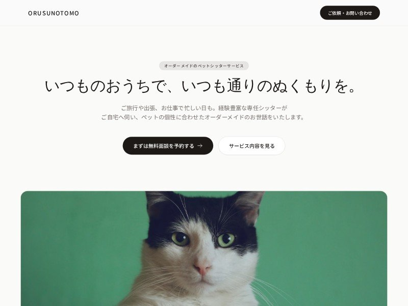

Primeira impressao serena
Hero centralizado, CTA discreto e imagem grande para sustentar credibilidade.
Uma segunda direcao visual para o seu portfolio: mais editorial, suave e premium, inspirada no modelo pet-sitter. Ideal para apresentar cases com uma sensacao de acolhimento, metodo e profissionalismo.


O modelo usa baixa saturacao, bordas grandes, serifas delicadas, fotos amplas e textos com bastante respiro. Para o seu portfolio, isso vira uma vitrine mais madura, menos tecnica e mais orientada a confianca.
Hero centralizado, CTA discreto e imagem grande para sustentar credibilidade.
Cards voltados para problema, solucao e resultado, sem excesso visual.
Paleta stone, serifas e cantos arredondados criam um portfolio mais autoral.

Nome do projeto, link no ar, prints desktop/mobile, stack e resumo da sua participacao.

Explicacao leve sobre briefing, construcao com IA, implementacao, revisao e publicacao.

Melhoria visual, organizacao, conversao, SEO, performance ou clareza da jornada.

Reestruturei a primeira dobra, reorganizei a hierarquia de conteudo e criei uma experiencia mobile mais clara.

Ajustei vitrine, chamadas, secoes de confianca e layout responsivo para facilitar a decisao de compra.
Formato estatico, gratuito e facil de alimentar a cada novo projeto publicado.
O foco continua sendo construir algo bonito, portavel e simples de manter.
A cada site novo, voce cria um case curto, visual e facil de comparar.
Link, prints, stack e contexto do projeto.
Problema, solucao e sua contribuicao.
Adicionar card e pagina do case no GitHub.
Manter o portfolio vivo a cada entrega.
#fafaf9#f5f5f4#e7e5e4#78716c#1c1917white + borderquiet bands#292524rounded 48pxNoto Serif JPEsta variacao funciona bem para cases de saude, beleza, servicos locais, profissionais autonomos e marcas que precisam parecer cuidadosas.